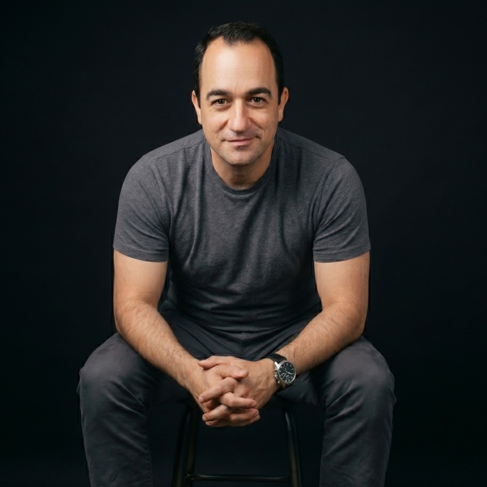

Metodologías
Observar y analizar.
Encuestas y estudios de opinión, análisis territorial y demográfico, evaluación cuantitativa y cualitativa.
Centro de Estudios Sociales y Demográficos
Somos un socio estratégico para instituciones públicas, organizaciones, campañas y empresas que necesitan comprender su entorno, evaluar escenarios y tomar decisiones con sustento.
Explorar nuestras capacidades ↓Nuestra visión
Convertir información compleja en conocimiento estratégico para comprender dinámicas sociales, orientar políticas públicas y apoyar decisiones institucionales.
Trayectoria
Reunimos sociología, demografía, estadística, investigación aplicada y visualización de datos para construir diagnósticos claros y productos ejecutivos útiles.
Metodologías
Encuestas y estudios de opinión, análisis territorial y demográfico, evaluación cuantitativa y cualitativa.
Áreas temáticas
Estructura poblacional, política social, opinión pública, mercados, territorios y audiencias.
Productos
Reportes ejecutivos, notas técnicas, bases estructuradas, dashboards, visualizaciones y tableros de indicadores.

Dirección
«La información solo tiene valor cuando impulsa decisiones. Nosotros la convertimos en estrategia.»
Nuestro enfoque integra investigación social, análisis técnico y presentación ejecutiva para que los hallazgos sean útiles para la organización.
Conversar con CENESSOD →Capacidad complementaria
Páginas de aterrizaje, recorridos virtuales 360° y campañas de anuncios para conectar a las audiencias con los canales de venta.
Documentación y contacto